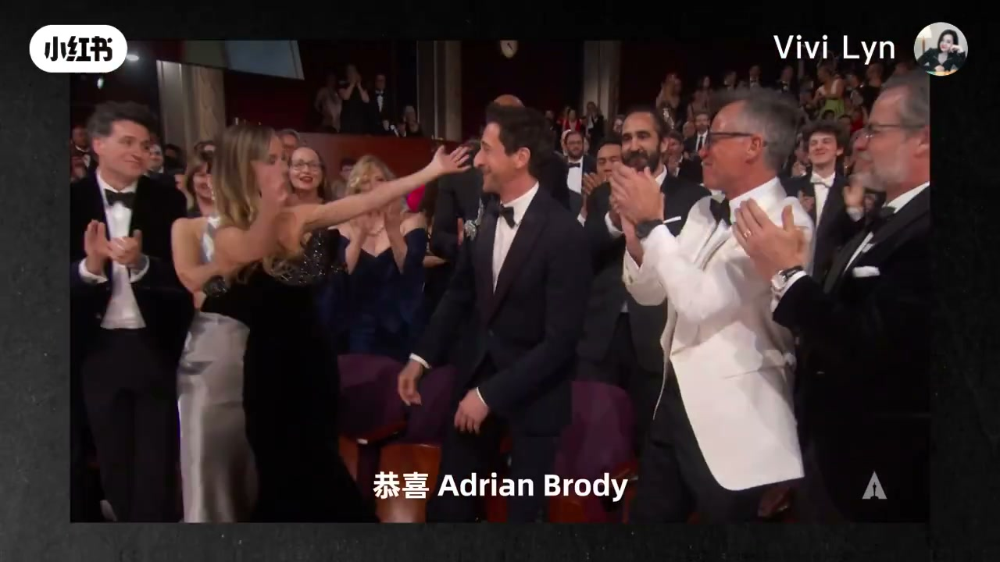
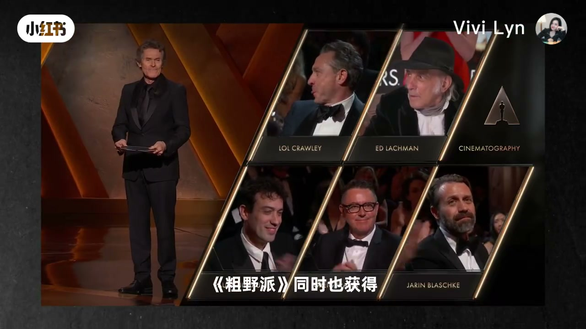
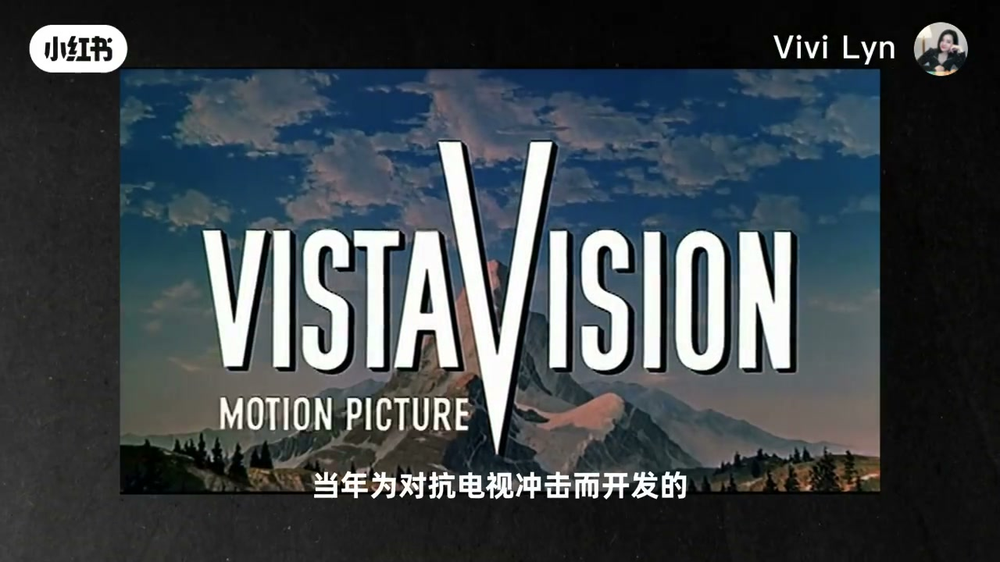
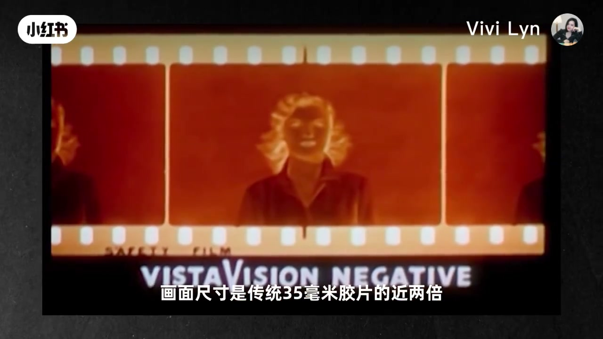
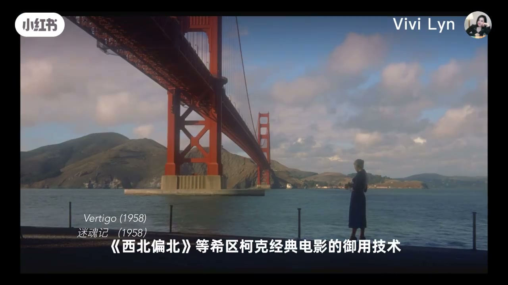
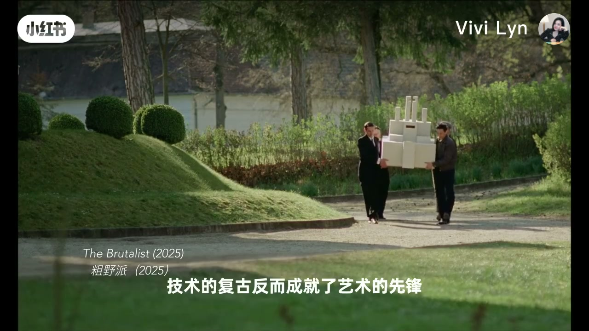

内容要点
全片约两分四十三秒，口播不断。前半段交代奖项和工艺来历，中间用底片条和老片画面说明画幅，结尾用《粗野派》的剧照把「一台机器、七年、复古」收成一句创作判断。转写是繁体，专名有听写误差；下面按画面字幕校正后再叙述。
知识结构
口播先恭喜 Adrien Brody 再次拿到影帝，再说《粗野派》同时获得最佳摄影和最佳原创音乐。摄影提名格上能读到 Lol Crawley；作曲家姓名画面没给出。
作者自称调色工作者，所以盯摄影和调色。她把 VistaVision 讲成派拉蒙 1954 年的技术，并指出《白色圣诞节》是第一部用它的电影。片尾卡写的是白色圣诞节，不是口播里的「黑色」。
和传统 35 毫米竖向运行不同，VistaVision 横向过片。字幕写画面尺寸近两倍，并连带更丰富的细节和更细的颗粒。希区柯克的《迷魂记》《西北偏北》被当作曾经的常用片；口播称这项工艺在 1960 年代退出主流，1963 年的《My Six Loves》是此前最后一部。
口播称全组只有一台 VistaVision 摄影机，所以准备更久、胶卷更多、预算更高，团队耗时七年才把片子做出来。字幕把结论写成：技术的复古反而成就了艺术的先锋，视觉革命只需一场足够大胆的冒险。
这条片子用奥斯卡最佳摄影当入口，讲的是画幅工艺而不是调色步骤：VistaVision 用横向 35 毫米换更大的单格。代价和「复兴」都是作者转述，画面能核对的是标志、底片条、老片名和《粗野派》剧照上的字幕。
00:00–00:26 先恭喜影帝，再点出摄影奖
视频未交代作者为什么挑在颁奖季做这条笔记。开口就是颁奖现场。00:01 的画面是「最佳男主角」提名格，基里安·墨菲站在台侧读卡片，格子里能看到 Adrien Brody、Timothée Chalamet、Colman Domingo、Ralph Fiennes 和 Sebastian Stan。口播这一段很碎，先重复「奥斯卡」，再念出 Adrian Brody。字幕在 00:08 写成「恭喜 Adrian Brody」。奖项卡上的拼写是 Adrien，字幕和口播少了一个字母，正文采用画面卡上的 Adrien Brody。
口播接着说，他是隔了 22 年再次拿到奥斯卡影帝桂冠。转写原文是「是个22年再次夺得奥斯卡影迪冠冠」，「影迪冠冠」按上下文读成影帝桂冠；「22 年」具体从哪一年算起，画面没有年份对照，这里只保留口播自己的说法。

00:12 起，口播把场景定在 2025 年的奥斯卡舞台，并说《粗野派》同时拿到最佳摄影和最佳原创音乐。00:18 的观众席画面上，字幕就是这一句。00:15 切到最佳摄影提名格，能读到的名字包括 Lol Crawley、Ed Lachman 和 Jarin Blaschke。口播却把摄影指导听成了「Low Quality」，后面又听成「Lowcrawler」。两处都按这块提名格改记为 Lol Crawley。

作曲家被听成 Daniel Broomberg。这一分钟的画面没有打出原创音乐得主的姓名，所以正文不把这个听写改成别的拼写，只标明无法从本片画面确认。
口播：殊荣不仅是对影片视觉美学的肯定，更让一项复古技术 VistaVision 重新成为电影工业的焦点。（00:28–00:34，转写原为繁体，这里写成简体。）
00:26–00:58 调色作者为什么要讲 1954 年
作者接着自报身份：她是调色工作者，电影的摄影和调色是她关注的重点，所以今天要认识这项 70 多年前的先锋技术。00:35 画面是一块青底上的 VISTAVISION MOTION PICTURE 标志，字幕写「重新成为电影工业的焦点」。
工艺来历讲得很具体。口播说 VistaVision 诞生于 1954 年，是派拉蒙当年为对抗电视冲击而开发的宽银幕。00:48 的标志叠在雪山画面上，字幕就是「当年为对抗电视冲击而开发的」。第一部采用它的电影，口播念的是 White Christmas。00:58 的片名卡写着 White Christmas (1954)，中文是「白色圣诞节 (1954)」。后面 02:20 的歌舞镜头再次打出同一片名，字幕是「从《白色圣诞节》的华美歌舞」。转写里的「黑色圣诞节」与这两处字幕相反，按画面改为白色圣诞节。

口播说这部片「取得了巨大成功」，下一句只剩下「最高的电影之一」。成功最高在票房、口碑还是奖项，转写没有把前半句录全，画面这一秒是圣诞歌舞而不是排行榜，所以不补写。
00:58–01:28 横向过片，以及它何时离开主流
比较从走片方向开始。口播说，传统 35 毫米胶片是竖向运行，VistaVision 是横向运行，画面尺寸接近传统 35 毫米的两倍，能拍出更广的视角，同时给更丰富的细节和更细腻的颗粒。转写把「竖向」听成「数向」，01:08 的画面是一条横向底片，齿孔在画面上下两边，标题写着 VISTAVISION NEGATIVE，字幕写「画面尺寸是传统 35 毫米胶片的近两倍」。齿孔的位置和这句字幕，就是「横向、近两倍」的画面依据。

老片例子接着出现。口播提到《迷魂记》《西北偏北》等希区柯克电影曾把 VistaVision 当常用技术。转写把希区柯克听成「西区客客」。01:18 的画面是《迷魂记》(1958)：金门大桥前一个穿深色衣服的背影，字幕写「《西北偏北》等希区柯克经典电影的御用技术」。片名卡和字幕把这句专名钉死了。

退出主流的时间也由口播给出：20 世纪 60 年代逐渐离开主流制作，最后一部用这项技术的电影是 1963 年的 My Six Loves。01:30 画面是一张黑白全家福剧照，字幕写「是 1963 年的 My Six Loves」，照片细字能看到派拉蒙和 1963 版权行。这是本片自己的片单，不是对 VistaVision 全部片目的外部核对。
话锋在 01:28 转回《粗野派》。口播说导演在对比各种拍摄方案后选定 VistaVision，并称该片是 60 多年来第一部完整的美国 VistaVision 电影。导演姓名被听成 Brady Corbett，画面没有打出导演全名，拼写无法从本片确认。01:40 的室内戏角标写成 The Brutalist (2025) / 粗野派 (2025)，字幕是「完整的美国 VistaVision 电影」。更早的 00:25 炭笔画面角标却写成 The Brutalist (2024)。同一条片子里年份角标不统一，口播只明确说了「2025 年的奥斯卡舞台」，没有解释 2024 和 2025 两个角标哪一个是发行年。
01:28–02:43 一台机器的代价，和作者的收束
选择这条工艺被说成并不容易。口播称整个拍摄团队只有一台 VistaVision 摄影机，因此要花更多时间做拍摄准备；技术特点还意味着更多胶卷和更高预算。01:50 能看到手把胶片穿进金属机件，字幕是「来进行拍摄准备」。镜头没有拍到机身数量，所以「只有一台」仍然只是口播，不是数出来的画面事实。
接下来是制作周期。口播说团队最终耗时 7 年，克服了融资困难和疫情的阴霾，把电影呈现给大众。转写里的「淫雾」按同音读成阴霾，画面没有打出这四个字。七年、融资和疫情都没有在抽到的帧上被写成标题，只保留为作者口述。
判断句出现在 02:04。口播说「技术的复古反而成就了艺术的先锋」。《粗野派》通过 VistaVision 不仅复刻了 20 世纪中叶的美学，还给当代拍摄提供更多灵感。02:05 的画面是几个人在园林小径上抬一块阶梯形的白色建筑模型，角标为 The Brutalist (2025)，字幕与这句判断一致。摄影指导再次被提到：口播称 Lol Crawley 看到 VistaVision 有复兴的潜力，自己也受到鼓舞。这句「他也表示」是作者转述，本片没有播出采访原话。

结尾用两部老片把工艺放回好莱坞黄金时代。02:20 回到《白色圣诞节》的户外歌舞，灯塔前一男一女跳舞，字幕写「从《白色圣诞节》的华美歌舞」。02:25 切到《战争与和平》(1956) 的骑兵冲锋，法国三色旗在烟尘里，字幕写「VistaVision 承载了好莱坞黄金时代的野心」。口播把后一部说成「史诗狂想」，画面给的是大战场。
最后一句在转写里是「而粗野派与 VistaVision 相遇正义的一件事」。02:30 字幕写成「证明了一件事」，02:35 字幕是「它只需一场足够大胆的冒险」，画面是片中人物从车窗探出身。按字幕，收束应读成：相遇证明了一件事，真正的视觉革命从未被时代定义，它只需一场足够大胆的冒险。这是作者的立场，不是对 VistaVision 画幅的测量结论。